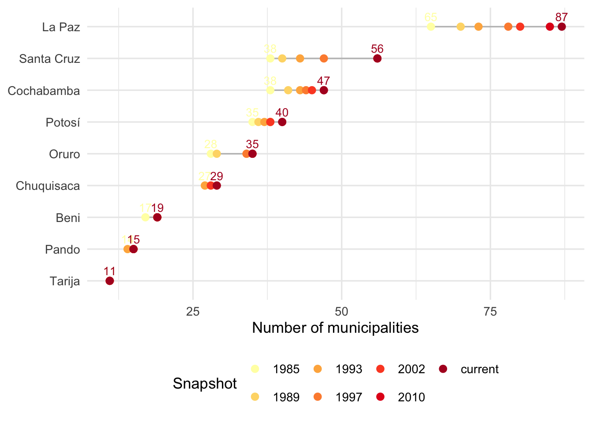
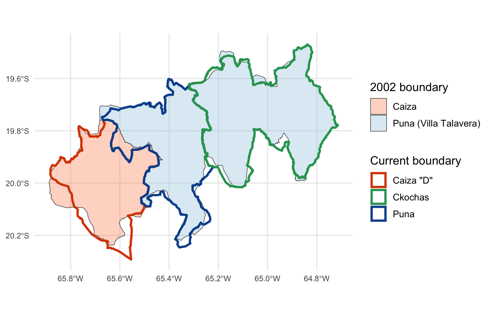
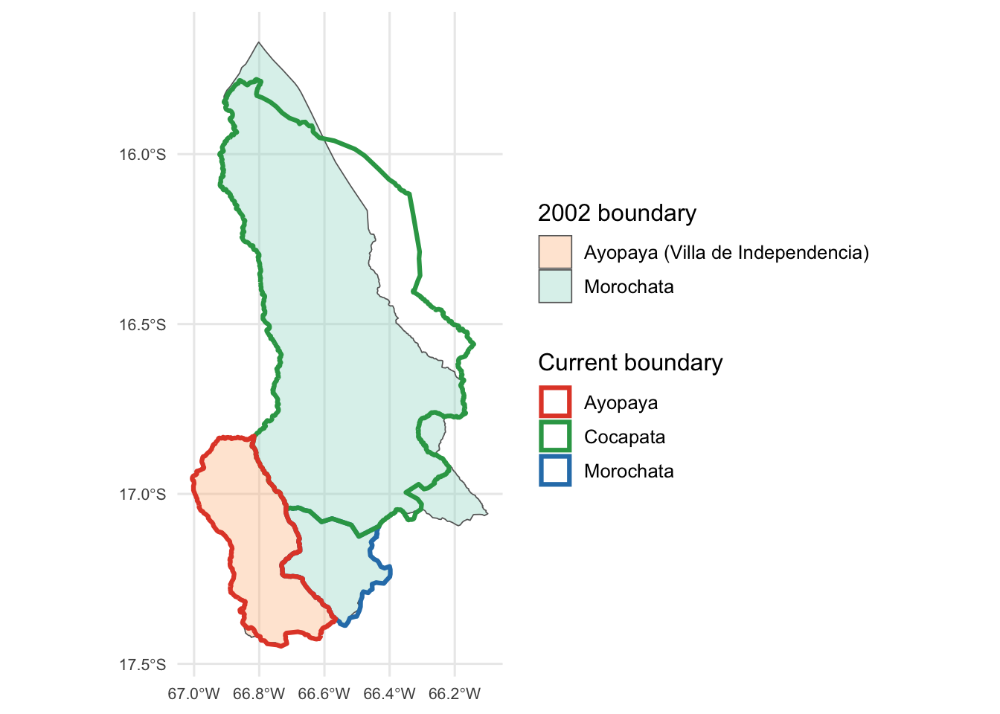

Code
library(tidyverse)
library(sf)
source("cel_helpers.R")cel_helpers.R loaded: compute_cel(), read_census_geo(), lookup tables, cel_colors.Bolivia’s current municipal structure has roots in the 1994 Ley de Participación Popular (LPP), which elevated the country’s secciones de provincia into fully recognized, autonomous municipalities. The LPP and subsequent legislation — particularly the 2009 constitution and associated autonomy laws — progressively increased the number of municipalities through subdivision of existing units. This document tracks that evolution using a series of seven historical boundary snapshots spanning 1985 to the present.
library(tidyverse)
library(sf)
source("cel_helpers.R")cel_helpers.R loaded: compute_cel(), read_census_geo(), lookup tables, cel_colors.The primary sources are six georeferenced boundary files (fondos) compiled by GeoBolivia and archived at the Internet Archive, plus the current municipal boundary layer from the same collection. Each file contains one polygon per municipality with standardized attributes including a six-digit code (DDPPSS: department, province, sequential number within province).
fondos_paths <- list(
`1985` = "../bolivia-data/fondos/fondos_273_municipios_1985/fondos:273_municipios_1985.geojson",
`1989` = "../bolivia-data/fondos/fondos_288_municipios_1989/fondos:288_municipios_1989.geojson",
`1993` = "../bolivia-data/fondos/fondos_301_municipios_1993/fondos:301_municipios_1993.geojson",
`1997` = "../bolivia-data/fondos/fondos_314_municipios_1997/fondos:314_municipios_1997.geojson",
`2002` = "../bolivia-data/fondos/fondos_327_municipios_2002/fondos:327_municipios_2002.geojson",
`2010` = "../bolivia-data/fondos/fondos_337_municipios_2010/fondos:337_municipios_2010.geojson"
)
# Lookup tables for fixing corrupted accented characters in historical fondos
muni_name_fix <- muni_lookup |> select(id_muni, muni_fix = muni_ine, dept_fix = department)
prov_name_fix <- prov_id_lookup_table |> select(id_prov, prov_fix = province_census)
# Load and standardise the six historical layers (shared schema)
# The historical GeoJSONs have corrupted accents (e.g. "Potos?" for "Potosí"),
# so we replace names by joining on numeric codes against cel_helpers lookups.
fondos_hist <- map(fondos_paths, \(p) {
st_read(p, quiet = TRUE) |>
st_drop_geometry() |>
transmute(
id_muni = codigo,
muni = nombre,
id_dept = codigo_dep,
dept = nombre_dep,
id_prov = codigo_pro,
prov = nombre_pro
) |>
left_join(muni_name_fix, by = "id_muni") |>
left_join(prov_name_fix, by = "id_prov") |>
mutate(
muni = coalesce(muni_fix, muni),
dept = coalesce(dept_fix, dept),
prov = coalesce(prov_fix, prov)
) |>
select(id_muni, muni, id_dept, dept, id_prov, prov)
})
# Load and standardise the current layer (different schema)
cur_raw <- st_read(
"../bolivia-data/fondos/fondos_municipio_geo/fondos:municipio_geo.geojson",
quiet = TRUE
)
fondos_cur <- cur_raw |>
st_drop_geometry() |>
transmute(
id_muni = c_ut,
muni = MUNICIPIO,
id_dept = substr(c_ut, 1, 2),
dept = DEPARTAMEN,
id_prov = substr(c_ut, 1, 4),
prov = PROVINCIA
)
# Named list of all seven snapshots as data frames
all_snaps <- c(fondos_hist, list(current = fondos_cur))
# Summary table: number of municipalities per snapshot
tibble(
Snapshot = names(all_snaps),
Municipalities = map_int(all_snaps, nrow)
)# A tibble: 7 × 2
Snapshot Municipalities
<chr> <int>
1 1985 273
2 1989 288
3 1993 301
4 1997 314
5 2002 327
6 2010 337
7 current 339library(kableExtra)
dept_counts <- imap(all_snaps, \(df, yr) {
df |>
count(dept, name = "n") |>
mutate(snapshot = yr)
}) |>
bind_rows() |>
mutate(snapshot = factor(snapshot, levels = names(all_snaps)))
evolution_by_dept <- dept_counts |>
mutate(snapshot = as.character(snapshot)) |>
select(dept, snapshot, n) |>
pivot_wider(
names_from = snapshot,
values_from = n
) |>
arrange(dept)
evolution_by_dept |>
kable(
caption = "Evolution by department",
align = c("l", rep("r", ncol(evolution_by_dept) - 1))
)| dept | 1985 | 1989 | 1993 | 1997 | 2002 | 2010 | current |
|---|---|---|---|---|---|---|---|
| Beni | 17 | 19 | 19 | 19 | 19 | 19 | 19 |
| Chuquisaca | 27 | 27 | 27 | 28 | 28 | 29 | 29 |
| Cochabamba | 38 | 41 | 43 | 44 | 45 | 47 | 47 |
| La Paz | 65 | 70 | 73 | 78 | 80 | 85 | 87 |
| Oruro | 28 | 29 | 34 | 34 | 35 | 35 | 35 |
| Pando | 14 | 15 | 14 | 15 | 15 | 15 | 15 |
| Potosí | 35 | 36 | 37 | 38 | 38 | 40 | 40 |
| Santa Cruz | 38 | 40 | 43 | 47 | 56 | 56 | 56 |
| Tarija | 11 | 11 | 11 | 11 | 11 | 11 | 11 |
# Find first/last snapshot point per department for labels
label_points <- dept_counts |>
group_by(dept) |>
arrange(snapshot, .by_group = TRUE) |>
filter(row_number() %in% c(1, n())) |>
ungroup() |>
mutate(
pos = if_else(snapshot == first(levels(dept_counts$snapshot)), "start", "end")
)
dept_counts |>
ggplot(aes(
x = n,
y = fct_reorder(dept, n, .fun = max),
color = snapshot,
group = dept
)) +
geom_line(color = "grey75") +
geom_point(size = 2.5) +
geom_text(
data = label_points,
aes(label = n),
size = 3.5,
nudge_y = 0.18, # move label above point (increase if needed)
hjust = 0.5,
vjust = 0, # anchor bottom of text at nudged position
show.legend = FALSE
) +
scale_color_brewer(palette = "YlOrRd", direction = 1) +
labs(x = "Number of municipalities", y = NULL, color = "Snapshot") +
theme_minimal(base_size = 13) +
theme(legend.position = "bottom")
Bolivia’s provincial structure also grew during this period, from 105 provinces in 1985 to 112 by 1993 — where it has remained ever since. All seven new provinces were created in the two earliest transitions.
prov_by_snap <- imap(all_snaps, \(df, yr) {
df |> distinct(id_prov, prov, id_dept, dept) |> mutate(snapshot = yr)
}) |> bind_rows()
prov_by_snap |>
count(snapshot, name = "Provinces") |>
mutate(snapshot = factor(snapshot, levels = names(all_snaps))) |>
arrange(snapshot) |>
rename(Snapshot = snapshot) |>
knitr::kable(caption = "Number of provinces per snapshot.")| Snapshot | Provinces |
|---|---|
| 1985 | 105 |
| 1989 | 109 |
| 1993 | 112 |
| 1997 | 112 |
| 2002 | 112 |
| 2010 | 112 |
| current | 112 |
snap_names_prov <- names(all_snaps)
prov_transitions <- map2(
snap_names_prov[-length(snap_names_prov)],
snap_names_prov[-1],
\(yr_from, yr_to) {
from_ids <- prov_by_snap |> filter(snapshot == yr_from) |> pull(id_prov)
prov_by_snap |>
filter(snapshot == yr_to, !id_prov %in% from_ids) |>
mutate(from = yr_from, to = yr_to)
}
) |> bind_rows()
prov_transitions |>
select(
Period = to,
Department = dept,
`Province code` = id_prov,
Province = prov
) |>
arrange(Period, Department) |>
knitr::kable()| Period | Department | Province code | Province |
|---|---|---|---|
| 1989 | Cochabamba | 0316 | Tiraque |
| 1989 | La Paz | 0219 | General José Manuel Pando |
| 1989 | Oruro | 0415 | Mejillones |
| 1989 | Potosí | 0516 | Enrique Baldivieso |
| 1993 | La Paz | 0220 | Caranavi |
| 1993 | Oruro | 0416 | Nor Carangas |
| 1993 | Santa Cruz | 0715 | Guarayos |
snap_names <- names(all_snaps)
# For each consecutive pair, find municipalities present in the later snapshot
# but absent in the earlier one (by id_muni code)
transitions <- map2(
snap_names[-length(snap_names)],
snap_names[-1],
\(yr_from, yr_to) {
from_ids <- all_snaps[[yr_from]]$id_muni
new_rows <- all_snaps[[yr_to]] |> filter(!id_muni %in% from_ids)
new_rows |> mutate(from = yr_from, to = yr_to)
}
) |>
bind_rows()
# Count per transition
transitions |>
count(from, to, name = "new_municipalities") |>
knitr::kable(caption = "New municipalities created at each transition between snapshots.")| from | to | new_municipalities |
|---|---|---|
| 1985 | 1989 | 15 |
| 1989 | 1993 | 17 |
| 1993 | 1997 | 14 |
| 1997 | 2002 | 13 |
| 2002 | 2010 | 10 |
| 2010 | current | 2 |
transitions |>
mutate(
dept = str_to_title(dept),
prov = str_to_title(prov)
) |>
select(
Period = to,
Department = dept,
Province = prov,
`id_muni` = id_muni,
Municipality = muni
) |>
arrange(Period, Department, id_muni) |>
knitr::kable()| Period | Department | Province | id_muni | Municipality |
|---|---|---|---|---|
| 1989 | Beni | Iténez | 080802 | Baures |
| 1989 | Beni | Iténez | 080803 | Huacaraje |
| 1989 | Cochabamba | Punata | 031404 | Tacachi |
| 1989 | Cochabamba | Punata | 031405 | Cuchumuela |
| 1989 | Cochabamba | Tiraque | 031601 | Tiraque |
| 1989 | La Paz | Murillo | 020105 | El Alto |
| 1989 | La Paz | Loayza | 020905 | Cairoma |
| 1989 | La Paz | Sud Yungas | 021105 | La Asunta |
| 1989 | La Paz | General José Manuel Pando | 021901 | Santiago de Machaca |
| 1989 | La Paz | General José Manuel Pando | 021902 | Catacora |
| 1989 | Oruro | Mejillones | 041501 | La Rivera |
| 1989 | Pando | Nicolás Suárez | 090102 | Porvenir |
| 1989 | Potosí | Enrique Baldivieso | 051601 | San Agustín |
| 1989 | Santa Cruz | Chiquitos | 070502 | Pailón |
| 1989 | Santa Cruz | Obispo Santistevan | 071003 | Mineros |
| 1993 | Cochabamba | Esteban Arze | 030404 | Sacabamba |
| 1993 | Cochabamba | Mizque | 031303 | Alalay |
| 1993 | La Paz | Pacajes | 020306 | Waldo Ballivian |
| 1993 | La Paz | Larecaja | 020605 | Combaya |
| 1993 | La Paz | Inquisivi | 021006 | Villa Libertad Licoma |
| 1993 | La Paz | Caranavi | 022001 | Caranavi |
| 1993 | Oruro | Dalence | 040702 | Machacamarca |
| 1993 | Oruro | Sud Carangas | 041202 | Belén de Andamarca |
| 1993 | Oruro | Mejillones | 041502 | Todos Santos |
| 1993 | Oruro | Mejillones | 041503 | Carangas |
| 1993 | Oruro | Nor Carangas | 041601 | Huayllamarca |
| 1993 | Potosí | General Bilbao | 051302 | Acasio |
| 1993 | Santa Cruz | Ichilo | 070403 | Yapacaní |
| 1993 | Santa Cruz | Ñuflo De Chaves | 071104 | San Julián |
| 1993 | Santa Cruz | Guarayos | 071501 | Ascensión de Guarayos |
| 1993 | Santa Cruz | Guarayos | 071502 | Urubichá |
| 1993 | Santa Cruz | Guarayos | 071503 | El Puente |
| 1997 | Chuquisaca | Sud Cinti | 010903 | Las Carreras |
| 1997 | Cochabamba | Germán Jordán | 030803 | Tolata |
| 1997 | La Paz | Pacajes | 020307 | Nazacara de Pacajes |
| 1997 | La Paz | Pacajes | 020308 | Callapa |
| 1997 | La Paz | Muñecas | 020503 | Aucapata |
| 1997 | La Paz | Larecaja | 020606 | Tipuani |
| 1997 | La Paz | Iturralde | 021502 | San Buenaventura |
| 1997 | Pando | Manuripi | 090203 | Filadelfia |
| 1997 | Potosí | Tomás Frías | 050104 | Urmiri |
| 1997 | Santa Cruz | Velasco | 070303 | San Rafael |
| 1997 | Santa Cruz | Chiquitos | 070503 | Roboré |
| 1997 | Santa Cruz | Cordillera | 070707 | Boyuibe |
| 1997 | Santa Cruz | Ñuflo De Chaves | 071103 | San Ramón |
| 1997 | Santa Cruz | Germán Busch | 071402 | Puerto Quijarro |
| 2002 | Cochabamba | Carrasco | 031206 | Entre Rios |
| 2002 | La Paz | Ingavi | 020805 | San Andrés de Machaca |
| 2002 | La Paz | Ingavi | 020806 | Jesús de Machaca |
| 2002 | Oruro | Cercado | 040104 | Soracachi |
| 2002 | Santa Cruz | Warnes | 070202 | Okinawa Uno |
| 2002 | Santa Cruz | Ichilo | 070404 | San Juan de Yapacani |
| 2002 | Santa Cruz | Sara | 070603 | Colpa Belgica |
| 2002 | Santa Cruz | Obispo Santistevan | 071004 | Fernández Alonso |
| 2002 | Santa Cruz | Obispo Santistevan | 071005 | San Pedro |
| 2002 | Santa Cruz | Ñuflo De Chaves | 071104 | San Julián |
| 2002 | Santa Cruz | Ñuflo De Chaves | 071105 | San Antonio de Lomerío |
| 2002 | Santa Cruz | Ñuflo De Chaves | 071106 | Cuatro Cañadas |
| 2002 | Santa Cruz | Germán Busch | 071403 | Carmen Rivero Torrez |
| 2010 | Chuquisaca | Nor Cinti | 010704 | Villa Charcas |
| 2010 | Cochabamba | Ayopaya | 030303 | Cocapata |
| 2010 | Cochabamba | Tiraque | 031602 | Shinahota |
| 2010 | La Paz | Omasuyos | 020203 | Chua Cocani |
| 2010 | La Paz | Omasuyos | 020204 | Huarina |
| 2010 | La Paz | Camacho | 020404 | Humanata |
| 2010 | La Paz | Camacho | 020405 | Escoma |
| 2010 | La Paz | Caranavi | 022002 | Alto Beni |
| 2010 | Potosí | Rafael Bustillo | 050204 | Chuquihuta |
| 2010 | Potosí | Linares | 051103 | Ckochas |
| current | La Paz | Omasuyos | 020205 | Huatajata |
| current | La Paz | Omasuyos | 020206 | Chua Cocani |
The LPP itself (1994) does not appear as a single transition because the boundary snapshots bracket it on either side: the 1993 layer reflects the pre-LPP secciones structure, while the 1997 and 2002 layers incorporate the municipalities created by LPP implementation. The largest post-LPP wave (2002→2010) created 10 new municipalities through a combination of the 2009 constitution’s autonomy legislation and organic boundary laws for individual municipalities.
The current boundary layer (fondos_municipio_geo) contains 339 polygons. The project’s muni_lookup table (from cel_helpers.R) lists 341 municipalities. The two additional entries — a disputed Potosí municipality (code 050405, likely San Pedro de Buena Vista) and a Beni entry coded as a Territorio Indígena Originario Campesino (080901) — are absent from the fondos layer, suggesting they lack finalized boundary delineations or official INE recognition as conventional municipalities.
The 2002 snapshot represents the stable baseline established by the LPP. To assess which municipalities have since changed their territorial footprint, we compare the 2002 boundaries against the current layer using two steps:
muni_327 <- st_read(
"../bolivia-data/fondos/fondos_327_municipios_2002/fondos:327_municipios_2002.geojson",
quiet = TRUE
) |>
mutate(id_muni = codigo, id_prov = codigo_pro) |>
st_make_valid()
muni_cur <- cur_raw |>
mutate(id_muni = c_ut, id_prov = substr(c_ut, 1, 4)) |>
st_make_valid()prov_327 <- muni_327 |> st_drop_geometry() |> count(id_prov, name = "n_327")
prov_cur <- muni_cur |> st_drop_geometry() |> count(id_prov, name = "n_cur")
prov_compare <- full_join(prov_327, prov_cur, by = "id_prov") |>
mutate(changed = n_327 != n_cur | is.na(n_327) | is.na(n_cur))
changed_provs <- prov_compare |> filter(changed) |> pull(id_prov)
tibble(
` ` = c("Provinces with identical count (assumed unchanged)",
"Provinces with different count (boundary check needed)"),
N = c(sum(!prov_compare$changed), sum(prov_compare$changed))
) |> knitr::kable()| N | |
|---|---|
| Provinces with identical count (assumed unchanged) | 104 |
| Provinces with different count (boundary check needed) | 8 |
compute_iou <- function(g1, g2) {
tryCatch({
inter_geom <- st_intersection(g1, g2)
if (length(inter_geom) == 0 || all(st_is_empty(inter_geom))) return(0)
inter <- sum(as.numeric(st_area(inter_geom)))
union <- as.numeric(st_area(st_union(g1, g2)))
if (union == 0) return(0)
inter / union
}, error = function(e) 0)
}
m327_ch <- muni_327 |> filter(id_prov %in% changed_provs)
mcur_ch <- muni_cur |> filter(id_prov %in% changed_provs)
iou_full <- list()
for (prov in changed_provs) {
m327_p <- m327_ch |> filter(id_prov == prov)
mcur_p <- mcur_ch |> filter(id_prov == prov)
for (i in seq_len(nrow(m327_p))) {
for (j in seq_len(nrow(mcur_p))) {
iou_full[[length(iou_full) + 1]] <- tibble(
id_prov = prov,
id_muni_327 = m327_p$id_muni[i],
nombre_327 = m327_p$nombre[i],
id_muni_cur = mcur_p$id_muni[j],
nombre_cur = mcur_p$MUNICIPIO[j],
iou = as.numeric(compute_iou(
st_geometry(m327_p[i, ]), st_geometry(mcur_p[j, ])
))
)
}
}
}
iou_matrix <- bind_rows(iou_full)
self_iou <- iou_matrix |>
filter(id_muni_327 == id_muni_cur) |>
select(id_muni_327, iou_with_self = iou)
muni_in_changed_provs <- m327_ch |>
st_drop_geometry() |>
select(id_muni_327 = id_muni, nombre_327 = nombre, id_prov) |>
left_join(self_iou, by = "id_muni_327") |>
mutate(iou_with_self = replace_na(iou_with_self, 0)) |>
mutate(boundary_status = case_when(
iou_with_self >= 0.85 ~ "unchanged",
iou_with_self >= 0.40 ~ "reduced",
TRUE ~ "reorganized"
))The table below has one row per municipality from the 2002 baseline that was involved in a territorial change. For each, it shows the self-IoU and the new municipalities created from it.
new_munis_source <- iou_matrix |>
filter(id_muni_327 != id_muni_cur) |>
filter(!id_muni_cur %in% muni_327$id_muni) |>
group_by(id_muni_cur, nombre_cur) |>
slice_max(iou, n = 1, with_ties = FALSE) |>
ungroup() |>
select(id_muni_source = id_muni_327, id_muni_new = id_muni_cur, nombre_new = nombre_cur)
source_summary <- new_munis_source |>
group_by(id_muni_source) |>
summarise(new_munis = paste(nombre_new, collapse = "; "), .groups = "drop")
prov_names <- prov_id_lookup_table |> select(id_prov, province_census, department)
muni_changes <- muni_in_changed_provs |>
left_join(prov_names, by = "id_prov") |>
left_join(source_summary, by = c("id_muni_327" = "id_muni_source")) |>
mutate(new_munis = replace_na(new_munis, "—")) |>
arrange(department, id_prov, id_muni_327)
muni_changes |>
select(
Department = department,
Province = province_census,
`id (2002)` = id_muni_327,
Municipality = nombre_327,
`Self-IoU` = iou_with_self,
Status = boundary_status,
`New municipalities created` = new_munis
) |>
mutate(`Self-IoU` = round(`Self-IoU`, 3)) |>
knitr::kable()| Department | Province | id (2002) | Municipality | Self-IoU | Status | New municipalities created |
|---|---|---|---|---|---|---|
| Chuquisaca | Nor Cinti | 010701 | Camargo | 0.919 | unchanged | — |
| Chuquisaca | Nor Cinti | 010702 | San Lucas | 0.936 | unchanged | — |
| Chuquisaca | Nor Cinti | 010703 | Incahuasi | 0.537 | reduced | Villa Charcas |
| Cochabamba | Ayopaya | 030301 | Ayopaya (Villa de Independencia) | 0.961 | unchanged | — |
| Cochabamba | Ayopaya | 030302 | Morochata | 0.097 | reorganized | Cocapata |
| Cochabamba | Tiraque | 031601 | Tiraque | 0.700 | reduced | Shinahota |
| La Paz | Omasuyos | 020201 | Achacachi | 0.633 | reduced | Huarina; Santiago de Huata; Huatajata; Chua Cocani |
| La Paz | Omasuyos | 020202 | Ancoraimes | 0.897 | unchanged | — |
| La Paz | Camacho | 020401 | Puerto Acosta | 0.403 | reduced | Humanata; Escoma |
| La Paz | Camacho | 020402 | Mocomoco | 0.744 | reduced | — |
| La Paz | Camacho | 020403 | Puerto Carabuco | 0.817 | reduced | — |
| La Paz | Caranavi | 022001 | Caranavi | 0.500 | reduced | Alto Beni |
| Potosí | Rafael Bustillo | 050201 | Unc?a | 0.595 | reduced | Chuquihuta Ayllu Jucumani |
| Potosí | Rafael Bustillo | 050202 | Chayanta | 0.887 | unchanged | — |
| Potosí | Rafael Bustillo | 050203 | Llallagua | 0.858 | unchanged | — |
| Potosí | Linares | 051101 | Puna (Villa Talavera) | 0.372 | reorganized | Ckochas |
| Potosí | Linares | 051102 | Caiza | 0.786 | reduced | — |
Puna and Caiza D are neighboring municipalities in Linares province, Potosí. The 2002 Puna polygon (Villa Talavera) was large and predominantly corresponds to the new Ckochas municipality, while the current Puna is a substantially smaller polygon. Caiza shows more modest changes. These boundary modifications are recent and may reflect ongoing adjustments associated with autonomous indigenous governance claims in the region.
puna_327 <- muni_327 |> filter(id_prov == "0511") |> mutate(label = nombre)
puna_cur <- muni_cur |> filter(id_prov == "0511") |> mutate(label = MUNICIPIO)
puna_pal_fill <- c("Puna (Villa Talavera)" = "#9ecae1",
"Caiza" = "#fc8d59")
puna_pal_outline <- c("Puna" = "#08519c",
"Ckochas" = "#2ca25f",
"Caiza \"D\"" = "#d94701")
ggplot() +
geom_sf(data = puna_327, aes(fill = label), alpha = 0.35,
color = "grey40", linewidth = 0.3) +
geom_sf(data = puna_cur, aes(color = label), fill = NA, linewidth = 1.1) +
scale_fill_manual(values = puna_pal_fill, name = "2002 boundary") +
scale_color_manual(values = puna_pal_outline, name = "Current boundary") +
theme_minimal(base_size = 12) +
theme(axis.text = element_text(size = 8))
Morochata shows a similar but more dramatic pattern. The 2002 Morochata polygon occupied the northern two-thirds of Ayopaya province; the current Morochata is a small polygon in the southern part of that territory, while the large northern area is now the new Cocapata municipality (self-IoU = 0.10). The most likely explanation is that the Cocapata canton — already the larger territorial unit within the old Morochata — was elevated to municipal status and retained its historical boundaries, while the municipality of Morochata shrank to the area immediately surrounding its capital. The same pattern applies to Puna/Ckochas.
morochata_327 <- muni_327 |> filter(id_prov == "0303") |> mutate(label = nombre)
morochata_cur <- muni_cur |> filter(id_prov == "0303") |> mutate(label = MUNICIPIO)
moro_pal_fill <- c("Morochata" = "#99d8c9",
"Ayopaya (Villa de Independencia)" = "#fdbb84")
moro_pal_outline <- c("Morochata" = "#2c7fb8",
"Cocapata" = "#31a354",
"Ayopaya" = "#e34a33")
ggplot() +
geom_sf(data = morochata_327, aes(fill = label), alpha = 0.35,
color = "grey40", linewidth = 0.3) +
geom_sf(data = morochata_cur, aes(color = label), fill = NA, linewidth = 1.1) +
scale_fill_manual(values = moro_pal_fill, name = "2002 boundary") +
scale_color_manual(values = moro_pal_outline, name = "Current boundary") +
theme_minimal(base_size = 12) +
theme(axis.text = element_text(size = 8))
tibble(
Snapshot = names(all_snaps),
`Total municipalities` = map_int(all_snaps, nrow),
`New since prior snapshot` = c(NA_integer_,
map2_int(
all_snaps[-length(all_snaps)],
all_snaps[-1],
\(a, b) sum(!b$id_muni %in% a$id_muni)
))
) |>
knitr::kable()| Snapshot | Total municipalities | New since prior snapshot |
|---|---|---|
| 1985 | 273 | NA |
| 1989 | 288 | 15 |
| 1993 | 301 | 17 |
| 1997 | 314 | 14 |
| 2002 | 327 | 13 |
| 2010 | 337 | 10 |
| current | 339 | 2 |
Bolivia’s municipal structure has grown from 273 units in 1985 to 339 in the current layer — an increase of 66 municipalities over roughly 35 years. Growth was continuous across all periods, with the largest single-period increase occurring between the 1985 and 1989 snapshots (15 new municipalities) and between 1993 and 1997 (13 new), when LPP implementation was being translated into formal boundary legislation. The post-2002 period added 12 more municipalities, principally through autonomy legislation following the 2009 constitution.
Of the 327 municipalities in the 2002 baseline, 316 are effectively unchanged in the current layer. Nine were reduced in area as the sources of new subdivisions, and two (Morochata and Puna) underwent significant territorial reorganization in which the promoted canton retained the majority of the original municipal territory.
The primary data source for this document is a series of seven GeoJSON boundary files compiled by the Bolivian government’s geographic infrastructure (GeoBolivia) and archived by @mauforonda at the Internet Archive. Each file represents a distinct “corte” (snapshot) of Bolivia’s municipal structure:
| File | Snapshot year | Municipalities |
|---|---|---|
fondos_273_municipios_1985 |
1985 | 273 |
fondos_288_municipios_1989 |
1989 | 288 |
fondos_301_municipios_1993 |
1993 | 301 |
fondos_314_municipios_1997 |
1997 | 314 |
fondos_327_municipios_2002 |
2002 | 327 |
fondos_337_municipios_2010 |
2010 | 337 |
fondos_municipio_geo |
~2021 | 339 |
The six historical files (1985–2010) share a common schema including codigo (six-digit municipality code), nombre, codigo_pro/nombre_pro (province), and codigo_dep/nombre_dep (department). The current layer uses a different schema (c_ut, MUNICIPIO, PROVINCIA, DEPARTAMEN). All files were downloaded to ../bolivia-data/fondos/ via the archive.org download API (see project notes for retrieval script).
INE published summary statistical sheets (fichas) for each municipality at the time of the 1992, 2001, and 2012 censuses. These are stored locally as PDF or Excel files organized in a department → province → municipality directory tree. All three census editions were compiled using the 327-municipality structure established by the LPP — i.e., the 1992 and 2001 fichas were produced retroactively on the 2002 baseline, so directory counts confirm the 327-municipality structure for both years rather than the actual boundaries at each census date.
| Census | Local path | Format | Municipalities |
|---|---|---|---|
| 1992 | ../bolivia-data/censo_1992/Fichas Resumen por municipios/ |
327 | |
| 2001 | ../bolivia-data/censo_2001/Fichas Resumen por municipios/ |
327 | |
| 2012 | ../bolivia-data/censo_2012/Fichas por municipio/ |
Excel | 338 (2 malformed filenames) |
The directory structure (dept number → province number → file name beginning with municipality sequence number) was used in an earlier version of this analysis to reconstruct municipality lists for each census. These are superseded by the fondos GeoJSONs for the current analysis.
cel_helpers.R)muni_lookup and prov_id_lookup_table are hand-curated lookup tables maintained in cel_helpers.R. They provide standardized municipality and province names across multiple naming conventions (INE, GADM, GB2014, census 2024, OEP 2026) and are the authoritative source for the 2024 official structure (341 municipalities). Two entries in muni_lookup lack full INE names and are absent from the fondos boundary layer; see the callout in Section 4 for details.